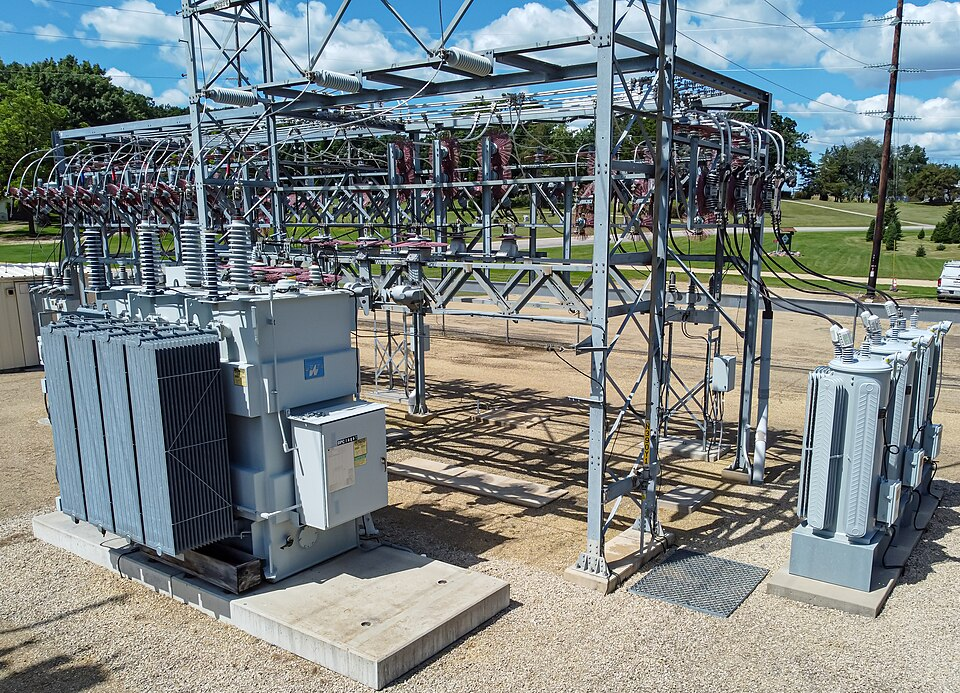
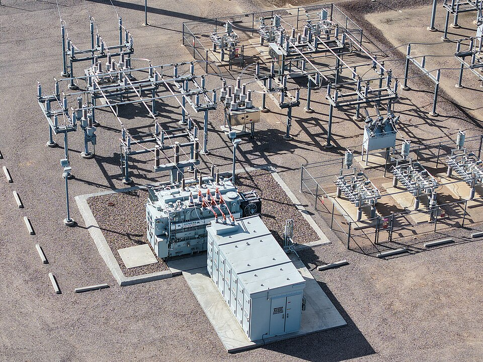

Supervisión técnica en campo
Liderazgo de cuadrillas y verificación del mantenimiento en BT, MT y AT.
Lideramos cuadrillas y contratistas de mantenimiento eléctrico en BT, MT y AT. Integramos competencias, control de riesgos HSE y calidad de ejecución con metodologías de confiabilidad y gerencia de sistemas de potencia.
Supervisión del personal, control del riesgo eléctrico y prácticas de trabajo seguro según el alcance aplicable. Ver título y alcance →

Liderazgo de cuadrillas y verificación del mantenimiento en BT, MT y AT.
Competencias, responsabilidades, contratistas y condiciones seguras de ejecución.
Selectividad, tiempos de despeje y criterios de protección.
Análisis de energía incidente y criterios de seguridad aplicables.
Evaluación de redes, equipotencialidad y desempeño del sistema.
Armónicos, desbalance, factor de potencia y perturbaciones.
Revisión técnica, criticidad, condición y requerimientos de mantenimiento.
Criticidad, análisis de fallas, disponibilidad e indicadores de mantenimiento.

Definimos responsabilidades, competencias y secuencias de trabajo. Verificamos permisos, controles de riesgo y condiciones de entrega para coordinar al personal y las actividades de mantenimiento.
Ver cómo gestionamos al equipo →
Aplicamos criterios de inspección y aceptación, documentamos hallazgos y damos seguimiento al cierre de pendientes. RCM, RCA y SAP PM apoyan decisiones de mantenimiento sustentadas en la condición del activo.
Consultar metodologías y servicios →Los hallazgos se interpretan con carga, condiciones ambientales, estado del equipo, antecedentes, criticidad y evidencia complementaria disponible.
Aplicamos RCM, RCA, IMC, FMEA y mantenimiento preventivo y predictivo. Gestionamos el ciclo de mantenimiento en SAP PM y coordinamos paradas con control de alcance, recursos, calidad y resultados. Apoyo técnico a trámites ante el operador de red y el CND según el alcance regulatorio de cada activo.
El servicio se estructura con las referencias técnicas y reglamentarias que correspondan a la instalación, actividad, cliente y edición vigente.
Las fotografías externas se utilizan como referencias de entornos eléctricos industriales. Sus fuentes y condiciones de uso se relacionan a continuación.